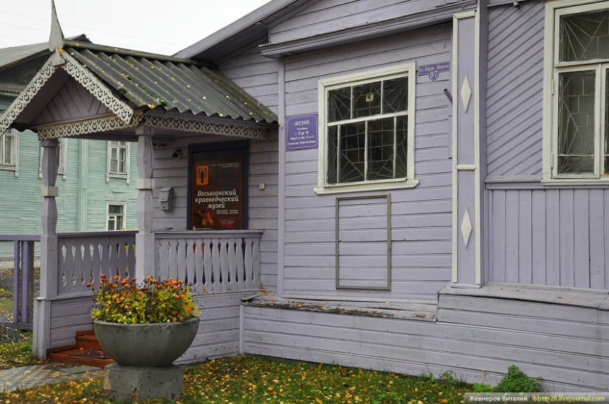
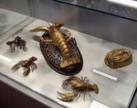

Весьегонский краеведческий музей создан в 1919 году из национализированных культурных ценностей и предметов бывших помещичьих имений. Собрано около 2 тысяч предметов, в основном дворянского быта: оружие, иконы, живопись, в том числе западноевропейская; богатейшая библиотека, основу которой составила личная библиотека Ф.И. Родичева - видного деятеля партии кадетов. Музей размещался в каменном доме купца Богомазова. В связи со строительством Рыбинского водохранилища и переносом города он дважды закрывался (1939, 1954).
Воссоздан в 1967 году. Ядром коллекции на этот раз стали экспонаты Горского школьного музея, созданного А.А. Виноградовым. С 1978 года - филиал Тверского государственного объединённого музея.
Здесь представлены археология и дореволюционная история Весьегонского края с великолепной коллекцией этнографических материалов. В одном из выставочных залов музея работает постоянная и непрерывно обновляемая выставка "Символы города Весьегонска", которую часто называют "Музеем речного рака". В выставочном зале фондохранилища действует постоянная выставка "Из Весьегонска - во Флориду", посвященная П.А. Дементьеву - видному земскому деятелю, предводителю весьегонского дворянства, основателю города Санкт-Петербурга в Соединенных Штатах Америки (Флорида)
В музее 160 экспонатов, посвященных речному раку.
